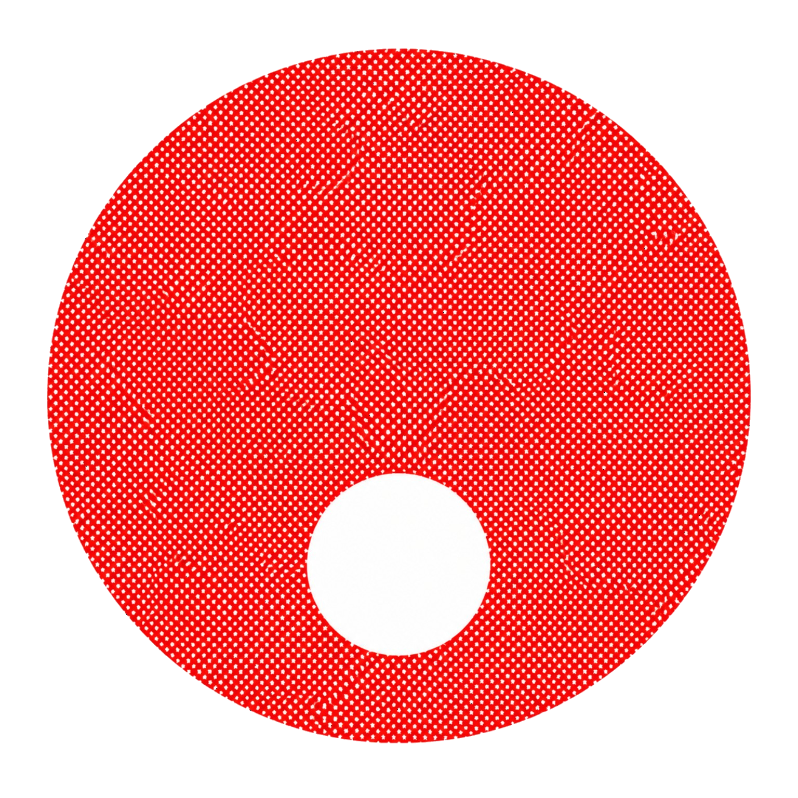

Aislamiento térmico
Materiales aislantes, morteros y productos refractarios para calderas y aplicaciones industriales.
Marca: Refrac.
Consultar producto →
SOLUCIONES INDUSTRIALES
Suministro de materiales, equipos, refacciones y soluciones para la industria, calderas y dispositivos de control de vapor.
Soluciones para la industria
Materiales, equipos y refacciones.
Apoyo para identificar tus necesidades.
Consulta disponibilidad y precios.
NUESTRO CATÁLOGO
Equipos, materiales y refacciones para calderas, instrumentación y aplicaciones industriales.
Materiales aislantes, morteros y productos refractarios para calderas y aplicaciones industriales.
Marca: Refrac.
Consultar producto →Empaques, cordones, cintas, hojas, diafragmas, difusores, ventiladores y componentes para calderas.
Servicio de mantenimiento correctivo y preventivo de calderas.
Marcas: Derpak, Caldex y Lubo Metal.
Consultar productos y servicios →Válvulas de control, válvulas solenoides, válvulas termostáticas y componentes para aplicaciones de vapor.
Marcas: Worcester, Jefferson y Trerice.
Consultar producto →Manómetros, termómetros, indicadores de temperatura, presostatos, termopozos y registradores.
Marcas: Trerice, Dewit y Vayremex.
Consultar producto →Bombas de agua de diferentes marcas, boquillas para quemador, cables de ignición, transformadores y otros componentes para equipos industriales.
Consultar producto →Tubo de acero inoxidable para soldar y con cuerda, cédulas 40 y 80. También tubos flux con y sin costura, tubo galvanizado cédula 40 y tubo negro cédula 80.
Marca indicada en la lista: Tumex, para los productos ahí descritos.
Consultar producto →Válvulas de acero inoxidable, bronce y acero al carbón; válvulas de nivel, esfera, aguja, solenoides, seguridad y alivio.
Marcas: Level, Worcester, V.C., Jefferson y Warrick.
Consultar producto →Las especificaciones, medidas, materiales, precios y disponibilidad se confirman al solicitar una cotización.
LO QUE OFRECEMOS
Soluciones para las necesidades de suministro, refacciones y mantenimiento de equipos en operaciones industriales.
Servicios de mantenimiento preventivo y correctivo para calderas industriales, de acuerdo con las necesidades de cada equipo.
Solicitar información →Cotización de materiales industriales, válvulas, instrumentación, tubería, aislamiento térmico y refacciones para calderas.
Consultar catálogo →Atención a requerimientos de materiales, equipos y componentes industriales, con cotizaciones de acuerdo con las especificaciones del cliente.
Cotizar proyecto →CONÓCENOS
En Proveedora Industrial y Calderas buscamos facilitar el suministro de materiales, equipos y refacciones que requieren las operaciones industriales.
Trabajamos para ofrecer atención personalizada, identificar los requerimientos de cada cliente y preparar cotizaciones de acuerdo con sus necesidades.
Hablemos de tu proyectoMateriales · Equipos · Soluciones
ESTAMOS PARA AYUDARTE
En Proveedora Industrial te ayudamos a encontrar los productos, refacciones y servicios que tu empresa necesita.
Para brindarte una mejor atención, comparte los detalles de tu requerimiento. Nuestro objetivo es ayudarte a identificar el producto o servicio adecuado.
Indica el nombre, marca, medida, material y cantidad que necesitas.
Describe si requieres mantenimiento preventivo o correctivo y comparte los detalles del equipo.
Podemos dar seguimiento a tu solicitud y orientarte sobre los siguientes pasos.
ATENCIÓN A EMPRESAS
Ya sea que busques materiales industriales, refacciones para calderas o servicios de mantenimiento, queremos conocer tus necesidades.
Atención a solicitudes de productos industriales.
Consultas sobre mantenimiento de calderas.
Información de precios y disponibilidad bajo cotización.
Próximamente: habilitaremos nuestros canales de contacto para recibir solicitudes de cotización.
Servicio: Ciudad de México y área metropolitana.
Envíos: a toda la República Mexicana, sujetos a cotización.